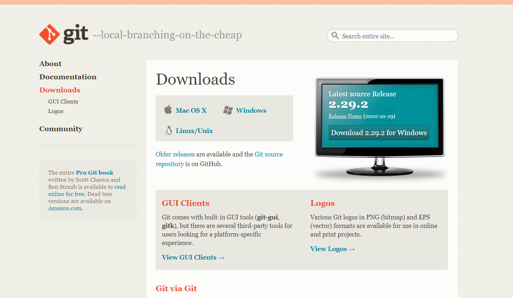
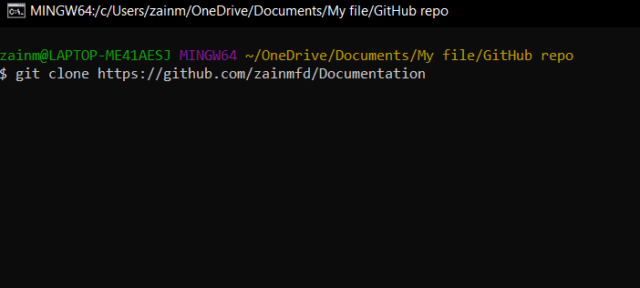

Documentation
Get started with Github and Mkdocs
Getting started
Git
Git is a free and open source distributed version control system designed to handle everything from small to very large projects with speed and efficiency.

Git Download After click on the above link chose the suitable version and install git.
VS-Code
Visual Studio Code is a free source-code editor made by Microsoft for Windows, Linux, and macOS. Features include support for debugging, syntax highlighting, intelligent code completion, snippets, code refactoring, and embedded Git. Users can change the theme, keyboard shortcuts, preferences, and install extensions that add additional functionality.
 Visual Studio Code download Choose suitable one.
Visual Studio Code download Choose suitable one.
GitHub
GitHub, Inc. is a subsidiary of Microsoft which provides hosting for software development and version control using Git. It offers the distributed version control and source code management (SCM) functionality of Git, plus its features. It provides access control and several collaboration features such as bug tracking, feature requests, task management, continuous integration, and wikis for every project. Headquartered in California, it has been a subsidiary of Microsoft since 2018.
GitHub offers its basic services free of charge. Its more advanced professional and enterprise services are commercial. Free GitHub accounts are commonly used to host open-source projects.
Create a GitHub account and fill all the personal info.
Start repository
Step 1 :-
To add a new repository, We can see a " + " on the right top of the main window of GitHub. Click on that and then click on New repository

Step 2 :-
Add a unique name for our repository, then choose whether you want a private or public repository. Initialize this repository with a README and if you need an open-source license choose one.

At last click on Create repository
Step 3 :-
Cloning a repository, When you create a repository on GitHub, it exists as a remote repository. You can clone your repository to create a local copy on your computer and sync between the two locations.
You can clone a repository from GitHub to your local computer to make it easier to fix merge conflicts, add or remove files, and push larger commits. When you clone a repository, you copy the repository from GitHub to your local machine.
Cloning a repository pulls down a full copy of all the repository data that GitHub has at that point in time, including all versions of every file and folder for the project. You can push your changes to the remote repository on GitHub, or pull other people's changes from GitHub.
For cloning right click on where ever you want to get your local copy into your PC and click on git bash.
then enter a comment like shown below.

zainmfd is my user name and Documentation is repository name.
After cloning you can see this window like shown below